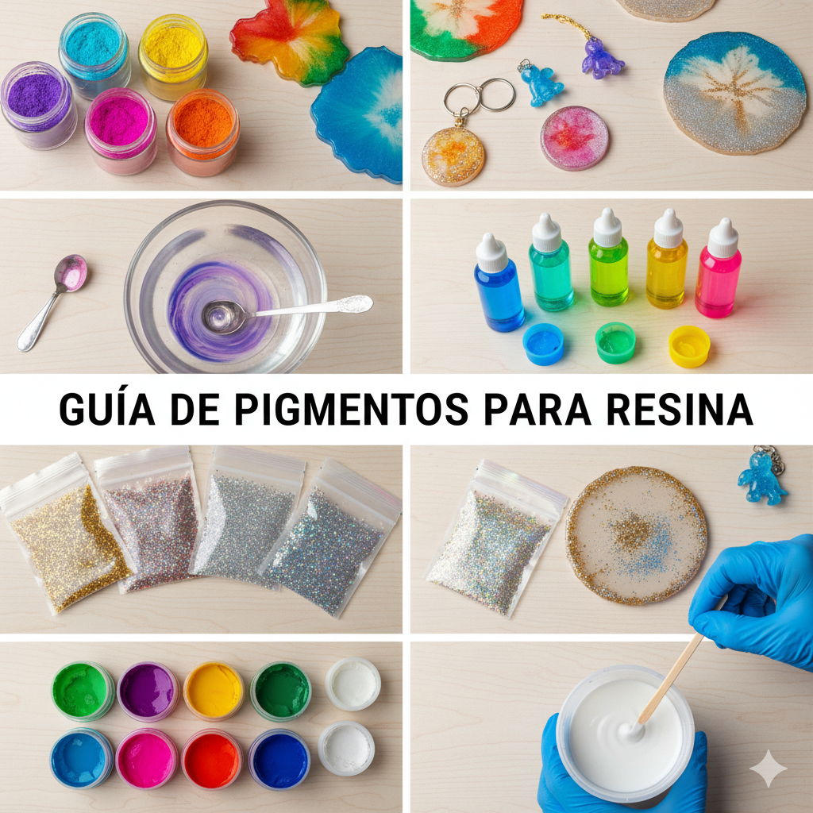

Guía Definitiva de Pigmentos para Resina Epoxi: Tipos, Usos y Secretos del Color
El color es lo que da vida a tus creaciones. Sin embargo, no todos los colorantes son adecuados para la resina epoxi. El secreto para un color vibrante y un curado perfecto reside en elegir el tipo de pigmento correcto y, crucialmente, en la cantidad. Aquí te presentamos la guía definitiva de pigmentos para que domines el color y la transparencia en tu resina.
1. Tipos de Pigmentos y Sus Efectos
Cada pigmento ofrece un acabado diferente: desde la transparencia cristalina hasta la opacidad total y los brillos metálicos.
A. Polvos de Mica (Efecto Perlado/Metálico)
- Descripción: Pigmentos minerales en polvo que añaden brillo, perla o un acabado metálico sutil. No son solubles, sino que se suspenden en la resina.
- Uso: Ideales para joyería, geodas, efectos de mar y para acentuar el flujo en Mesas de Río.
- Tip SEO: Usar solo una pequeña cantidad. El exceso puede hacer que la resina se vea opaca y pierda su transparencia.
B. Tintas de Alcohol (Efecto Transparente o Células 3D)
- Descripción: Pigmentos concentrados a base de alcohol. Son la mejor opción para colores transparentes o el famoso efecto célula o efecto 3D (cuando se usan con tinta blanca).
- Uso: Joyería transparente, efectos acuarela, arte de resina abstracto.
- Advertencia: Usa solo tintas de alta calidad. Algunas tintas de alcohol baratas pueden afectar el curado.
C. Pastas de Color (Opacidad Total)
- Descripción: Altamente concentradas. Un toque de pasta es suficiente para lograr un color sólido y opaco sin diluir la resina.
- Uso: Para conseguir colores sólidos en posavasos, bandejas o cualquier pieza que necesite opacidad total.
- Clave: Por su alta concentración, pesan mucho. Nunca uses más del 3-5% del volumen total de la resina.
D. Pigmentos Líquidos Transparente
- Descripción: Similar a las tintas de alcohol pero a menudo a base de glicol o epoxi. Diseñados específicamente para mantener la claridad cristalina.
- Uso: Cuando se busca un color suave y homogéneo manteniendo la máxima transparencia.
2. Errores Comunes al Pigmentar la Resina (¡Evítalos!)
La mayoría de los problemas de curado o acabado provienen de una pigmentación incorrecta.
- Usar Pinturas Acrílicas o al Óleo: Estas pinturas contienen agua (acrílico) o aceite (óleo), que son incompatibles con la química de la resina epoxi y pueden impedir que la resina cure correctamente o dejarla pegajosa.
- Exceso de Pigmento: Añadir demasiado pigmento (especialmente mica o pasta) interfiere con la proporción química de la mezcla A y B. El exceso de pigmento concentrado actúa como un "relleno" y puede resultar en una pieza blanda o que nunca termina de curar.
- No Mezclar Correctamente: Siempre mezcla el pigmento en el componente A (Resina) antes de añadir el componente B (Endurecedor). Asegúrate de que el color esté totalmente homogéneo antes de comenzar la cuenta regresiva del tiempo de trabajo.
üé® ¿Quieres dominar la t√©cnica de las capas de color y el "efecto geoda"? Nuestro curso incluye m√≥dulos detallados sobre la mezcla avanzada de pigmentos para resina y el control de la densidad para crear efectos 3D. A√±ade profundidad y profesionalidad a tu arte.